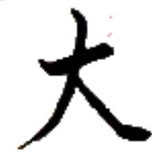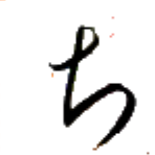
スㇰ⤴ 【人】
[名詞] 人
[略号] 人善集【人善集】（アイル共和国厚生省）
無人 ムン→スㇰ⤴ 【無人】
[名詞] 誰も～ない（英語 nobody, no one）
冠人 アイ⤴スㇰ⤴ 【冠人】
[名詞] アイル共和国の人；（民族としての）アイル人
キー→ 【男】【侽】
[名詞] 男性、男
[名詞] (～の)夫
[略号] (音楽)基準音の8半音上の音、(移動ドで)ソ♯・ラ♭の音
残片 トゥエゥㇰ·ツオウ→ 【残片】
[名詞] 残りの札、残りの駒、残りのカード、残りの牌
待声時 ティㇺ→スオㇷ゚⤴カㇰ· 【待声時】
[名詞] （パイグ語の文法用語）語境界や意味上の区切れを明示するために用いる発話中の無音区間
 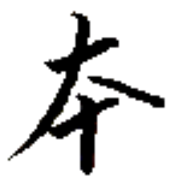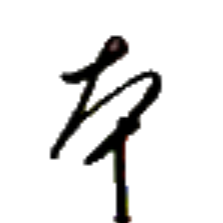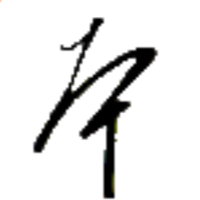
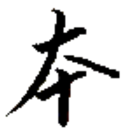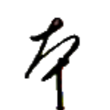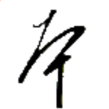
ワイ→ 【将】【將】
[名詞] 将軍、上司、（セッカイクの）将
[動詞] 〔単独では稀〕命令する
下将 ウㇳ⤴ワイ→ 【下将】
[名詞] 三等実働監（アイル共和国の省庁の兵【兵】において 6 番目に低い階級）
下将軸 ウㇳ⤴ワイ→ラー→ 【下将軸】
[名詞] 二等実働監（アイル共和国の省庁の兵【兵】において 7 番目に低い階級）
上将 ザウ⤴ワイ→ 【上将】
[名詞] 一等実働監（アイル共和国の省庁の兵【兵】において 8 番目に低い階級）
上将軸 ザウ⤴ワイ→ラー→ 【上将軸】
[名詞] 上等実働監（アイル共和国の省庁の兵【兵】において 9 番目に低い階級）
大将 マー→ワイ→ 【大将】
[名詞] 実働監長（アイル共和国の省庁の兵【兵】において 10 番目に低い階級）
連将撃裁 ニエㇰ→ワイ→クㇳ⤴シュー→ 【連将撃裁】
[成句] しっかりと準備をした上で思い切った行動をすること
皇処之将 タㇺ⤴ホエゥ·ア·ワイ→ 【皇処之将】
[名詞] 他人のために自分を犠牲にする人、良い上司
 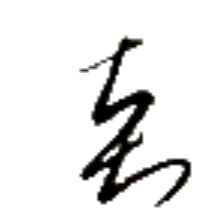
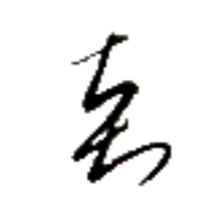
タウン→ 【多】
[連体詞] 多くの、たくさんの
[状態動詞] 数多くある
使多言一 ズイ→タウン→チェㇷ゚→エゥㇳ⤴ 【使多言一】
[名詞] 単一の燐字をパイグ語 2 単語以上を用いて読むこと
 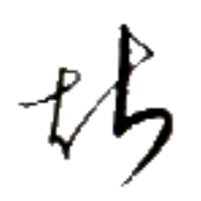
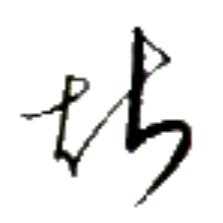
ゲゥ· 【等】
[接尾辞] （人称代名詞などの後について）～たち、～ら
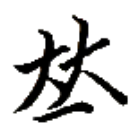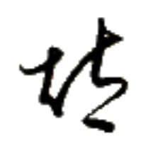
ダㇳ⤴ 【集】
[動詞] 集まる、集める
[名詞] 郡、（セッカイクなどの）役
集意之字 ダㇳ⤴シャー⤴ア·マン→ 【集意之字】
[名詞] 会意文字、それぞれの構成要素の意味を合わせた文字
闇集 ホエゥㇳ·ダㇳ⤴ 【闇集】
[名詞] ペデ郡、ペドゥ郡、ペズ郡（アイル共和国の郡名）
山中集 ツォウ→クアイ⤴ダㇳ⤴ 【山中集】
[名詞] スプケベス郡、シュプケベス郡（アイル共和国の郡名）
骨門大集 ホウ⤴ギアウ→マー→ダㇳ⤴ 【骨門大集】
[名詞] 大オキヤウ郡、シェプ・オキヤウ郡（アイル共和国の郡名）
筆声字集 クアー⤴スオㇷ゚⤴マン→ダㇳ⤴ 【筆声字集】
[名詞] 音写語、音訳語、字から語源を見てとりづらい語
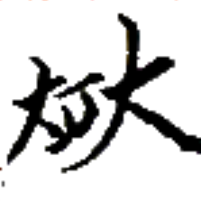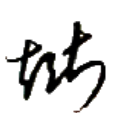
ヒー→ 【友】
[名詞] 友達、友人、仲間
[名詞] （カードゲームにおける）同じ強さの札による役
労時 ナイㇷ゚⤴カㇰ· 【労時】
[名詞] 労働時間
[時間詞] 労働時間中、働いている際

 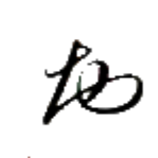
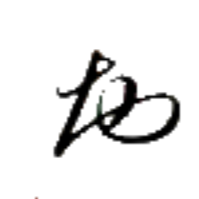
 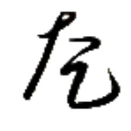
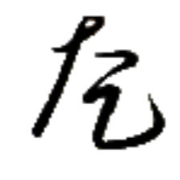


 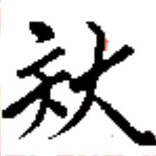
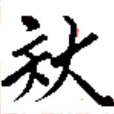


 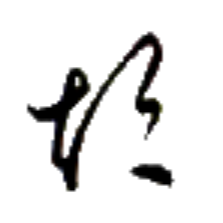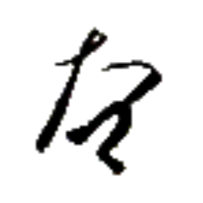
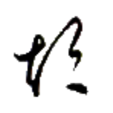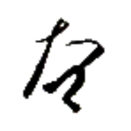

 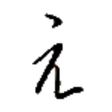
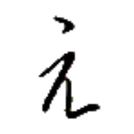